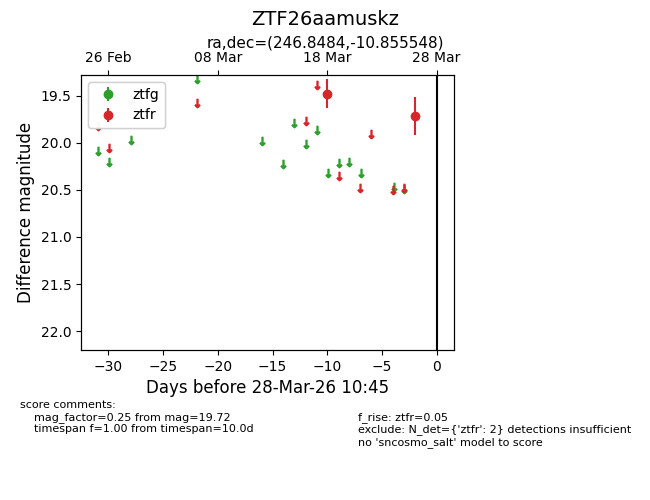
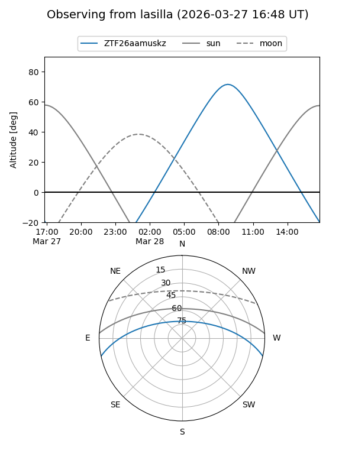
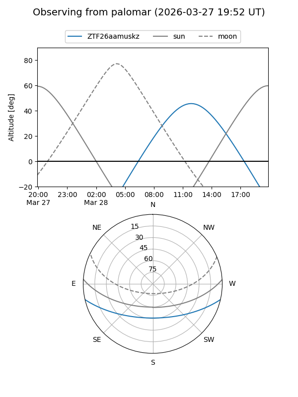

ZTF26aamuskz
Target ZTF26aamuskz at 2026-03-28 10:48
Aliases and brokers:
FINK: link
Lasair: link
ALeRCE: link
alt names
ZTF26aamuskz (ztf,fink_ztf)
Coordinates:
equatorial (ra, dec) = 246.8484,-10.85555
equatorial (HMS+DMS) = 16:27:23.61,-10:51:19.97
galactic (l, b) = (4.4559,+25.34203)
Flags:
Photometry:
last ztfr=19.72
2 ztfr detections
Lightcurve

Visibility


Additional plots